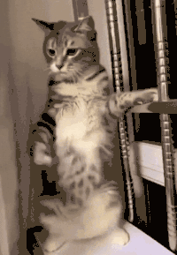
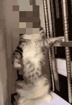
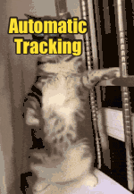

Private, On-Device Tracking
Track objects in GIFs - no timeline, no keyframes.
Pin anything to motion in seconds. Make your edits follow the action. Processing happens entirely on your device with zero uploads.
Built by an independent developer. Private by design. No tracking.
- No uploads
- No account
- On-device tracking
- No watermark
- Free forever
Original

Tracked sticker

Tracked blur

Tracked text
